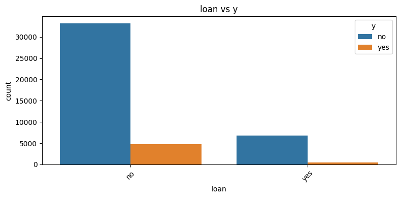
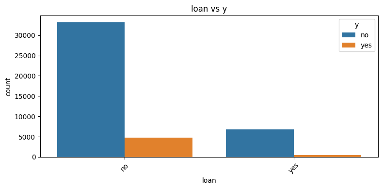

Bank Marketing#
Kita akan menggunakan dataset Bank Marketing dan lakukan visualisasi serta pra-proses dasar supaya bisa dilanjut ke klasifikasi. Berikut langkah & kodenya:
(mengacu ke dataset dari UCI “Bank Marketing” — fitur kategorikal + numerik, target binary “y” = apakah nasabah akan subscribe deposito)
Instalasi ucimlrepo package#
tersedia library resmi bernama ucimlrepo yang memungkinkan mengambil dataset dari UCI Machine Learning Repository langsung lewat kode Python, tanpa manual download.
pip install ucimlrepo
Collecting ucimlrepo
Downloading ucimlrepo-0.0.7-py3-none-any.whl.metadata (5.5 kB)
Requirement already satisfied: pandas>=1.0.0 in /usr/local/lib/python3.12/dist-packages (from ucimlrepo) (2.2.2)
Requirement already satisfied: certifi>=2020.12.5 in /usr/local/lib/python3.12/dist-packages (from ucimlrepo) (2025.8.3)
Requirement already satisfied: numpy>=1.26.0 in /usr/local/lib/python3.12/dist-packages (from pandas>=1.0.0->ucimlrepo) (2.0.2)
Requirement already satisfied: python-dateutil>=2.8.2 in /usr/local/lib/python3.12/dist-packages (from pandas>=1.0.0->ucimlrepo) (2.9.0.post0)
Requirement already satisfied: pytz>=2020.1 in /usr/local/lib/python3.12/dist-packages (from pandas>=1.0.0->ucimlrepo) (2025.2)
Requirement already satisfied: tzdata>=2022.7 in /usr/local/lib/python3.12/dist-packages (from pandas>=1.0.0->ucimlrepo) (2025.2)
Requirement already satisfied: six>=1.5 in /usr/local/lib/python3.12/dist-packages (from python-dateutil>=2.8.2->pandas>=1.0.0->ucimlrepo) (1.17.0)
Downloading ucimlrepo-0.0.7-py3-none-any.whl (8.0 kB)
Installing collected packages: ucimlrepo
Successfully installed ucimlrepo-0.0.7
Import dataset#
from ucimlrepo import fetch_ucirepo
# fetch dataset
bank_marketing = fetch_ucirepo(id=222)
# data (as pandas dataframes)
X = bank_marketing.data.features
y = bank_marketing.data.targets
# metadata
print(bank_marketing.metadata)
# variable information
print(bank_marketing.variables)
{'uci_id': 222, 'name': 'Bank Marketing', 'repository_url': 'https://archive.ics.uci.edu/dataset/222/bank+marketing', 'data_url': 'https://archive.ics.uci.edu/static/public/222/data.csv', 'abstract': 'The data is related with direct marketing campaigns (phone calls) of a Portuguese banking institution. The classification goal is to predict if the client will subscribe a term deposit (variable y).', 'area': 'Business', 'tasks': ['Classification'], 'characteristics': ['Multivariate'], 'num_instances': 45211, 'num_features': 16, 'feature_types': ['Categorical', 'Integer'], 'demographics': ['Age', 'Occupation', 'Marital Status', 'Education Level'], 'target_col': ['y'], 'index_col': None, 'has_missing_values': 'yes', 'missing_values_symbol': 'NaN', 'year_of_dataset_creation': 2014, 'last_updated': 'Fri Aug 18 2023', 'dataset_doi': '10.24432/C5K306', 'creators': ['S. Moro', 'P. Rita', 'P. Cortez'], 'intro_paper': {'ID': 277, 'type': 'NATIVE', 'title': 'A data-driven approach to predict the success of bank telemarketing', 'authors': 'Sérgio Moro, P. Cortez, P. Rita', 'venue': 'Decision Support Systems', 'year': 2014, 'journal': None, 'DOI': '10.1016/j.dss.2014.03.001', 'URL': 'https://www.semanticscholar.org/paper/cab86052882d126d43f72108c6cb41b295cc8a9e', 'sha': None, 'corpus': None, 'arxiv': None, 'mag': None, 'acl': None, 'pmid': None, 'pmcid': None}, 'additional_info': {'summary': "The data is related with direct marketing campaigns of a Portuguese banking institution. The marketing campaigns were based on phone calls. Often, more than one contact to the same client was required, in order to access if the product (bank term deposit) would be ('yes') or not ('no') subscribed. \n\nThere are four datasets: \n1) bank-additional-full.csv with all examples (41188) and 20 inputs, ordered by date (from May 2008 to November 2010), very close to the data analyzed in [Moro et al., 2014]\n2) bank-additional.csv with 10% of the examples (4119), randomly selected from 1), and 20 inputs.\n3) bank-full.csv with all examples and 17 inputs, ordered by date (older version of this dataset with less inputs). \n4) bank.csv with 10% of the examples and 17 inputs, randomly selected from 3 (older version of this dataset with less inputs). \nThe smallest datasets are provided to test more computationally demanding machine learning algorithms (e.g., SVM). \n\nThe classification goal is to predict if the client will subscribe (yes/no) a term deposit (variable y).", 'purpose': None, 'funded_by': None, 'instances_represent': None, 'recommended_data_splits': None, 'sensitive_data': None, 'preprocessing_description': None, 'variable_info': 'Input variables:\n # bank client data:\n 1 - age (numeric)\n 2 - job : type of job (categorical: "admin.","unknown","unemployed","management","housemaid","entrepreneur","student",\n "blue-collar","self-employed","retired","technician","services") \n 3 - marital : marital status (categorical: "married","divorced","single"; note: "divorced" means divorced or widowed)\n 4 - education (categorical: "unknown","secondary","primary","tertiary")\n 5 - default: has credit in default? (binary: "yes","no")\n 6 - balance: average yearly balance, in euros (numeric) \n 7 - housing: has housing loan? (binary: "yes","no")\n 8 - loan: has personal loan? (binary: "yes","no")\n # related with the last contact of the current campaign:\n 9 - contact: contact communication type (categorical: "unknown","telephone","cellular") \n 10 - day: last contact day of the month (numeric)\n 11 - month: last contact month of year (categorical: "jan", "feb", "mar", ..., "nov", "dec")\n 12 - duration: last contact duration, in seconds (numeric)\n # other attributes:\n 13 - campaign: number of contacts performed during this campaign and for this client (numeric, includes last contact)\n 14 - pdays: number of days that passed by after the client was last contacted from a previous campaign (numeric, -1 means client was not previously contacted)\n 15 - previous: number of contacts performed before this campaign and for this client (numeric)\n 16 - poutcome: outcome of the previous marketing campaign (categorical: "unknown","other","failure","success")\n\n Output variable (desired target):\n 17 - y - has the client subscribed a term deposit? (binary: "yes","no")\n', 'citation': None}}
name role type demographic \
0 age Feature Integer Age
1 job Feature Categorical Occupation
2 marital Feature Categorical Marital Status
3 education Feature Categorical Education Level
4 default Feature Binary None
5 balance Feature Integer None
6 housing Feature Binary None
7 loan Feature Binary None
8 contact Feature Categorical None
9 day_of_week Feature Date None
10 month Feature Date None
11 duration Feature Integer None
12 campaign Feature Integer None
13 pdays Feature Integer None
14 previous Feature Integer None
15 poutcome Feature Categorical None
16 y Target Binary None
description units missing_values
0 None None no
1 type of job (categorical: 'admin.','blue-colla... None no
2 marital status (categorical: 'divorced','marri... None no
3 (categorical: 'basic.4y','basic.6y','basic.9y'... None no
4 has credit in default? None no
5 average yearly balance euros no
6 has housing loan? None no
7 has personal loan? None no
8 contact communication type (categorical: 'cell... None yes
9 last contact day of the week None no
10 last contact month of year (categorical: 'jan'... None no
11 last contact duration, in seconds (numeric). ... None no
12 number of contacts performed during this campa... None no
13 number of days that passed by after the client... None yes
14 number of contacts performed before this campa... None no
15 outcome of the previous marketing campaign (ca... None yes
16 has the client subscribed a term deposit? None no
Setelah berhasil import dataset lanjut gabungkan fetures dan targets
import pandas as pd
import matplotlib.pyplot as plt
import seaborn as sns
from sklearn.preprocessing import LabelEncoder
# Gabungkan jadi satu dataframe
df = pd.concat([X, y], axis=1)
# Lihat 5 baris pertama
print(df.head())
# Info & tipe data
print(df.info())
# Cek distribusi target
print(df['y'].value_counts())
age job marital education default balance housing loan \
0 58 management married tertiary no 2143 yes no
1 44 technician single secondary no 29 yes no
2 33 entrepreneur married secondary no 2 yes yes
3 47 blue-collar married NaN no 1506 yes no
4 33 NaN single NaN no 1 no no
contact day_of_week month duration campaign pdays previous poutcome y
0 NaN 5 may 261 1 -1 0 NaN no
1 NaN 5 may 151 1 -1 0 NaN no
2 NaN 5 may 76 1 -1 0 NaN no
3 NaN 5 may 92 1 -1 0 NaN no
4 NaN 5 may 198 1 -1 0 NaN no
<class 'pandas.core.frame.DataFrame'>
RangeIndex: 45211 entries, 0 to 45210
Data columns (total 17 columns):
# Column Non-Null Count Dtype
--- ------ -------------- -----
0 age 45211 non-null int64
1 job 44923 non-null object
2 marital 45211 non-null object
3 education 43354 non-null object
4 default 45211 non-null object
5 balance 45211 non-null int64
6 housing 45211 non-null object
7 loan 45211 non-null object
8 contact 32191 non-null object
9 day_of_week 45211 non-null int64
10 month 45211 non-null object
11 duration 45211 non-null int64
12 campaign 45211 non-null int64
13 pdays 45211 non-null int64
14 previous 45211 non-null int64
15 poutcome 8252 non-null object
16 y 45211 non-null object
dtypes: int64(7), object(10)
memory usage: 5.9+ MB
None
y
no 39922
yes 5289
Name: count, dtype: int64
Visualisasi#
Karena banyak fitur (numerik + kategorikal), beberapa visualisasi yang cocok: ###Histogram / distribusi fitur numerik
numeric_cols = df.select_dtypes(include=["int64", "float64"]).columns.tolist()
numeric_cols.remove('duration') # optional kalau ingin mengecualikan fitur durasi jika terlalu memengaruhi
df[numeric_cols].hist(bins=20, figsize=(12, 8))
plt.tight_layout()
plt.show()
Boxplot numerik vs target#
plt.figure(figsize=(10, 6))
sns.boxplot(data=df, x='y', y='age')
plt.title("Distribusi umur berdasarkan target y")
plt.show()
Bisa juga lakukan boxplot serupa untuk fitur numerik lainnya vs y.
Countplot fitur kategorikal#
categorical_cols = df.select_dtypes(include=["object"]).columns.tolist()
categorical_cols.remove('y')
for col in categorical_cols:
plt.figure(figsize=(8,4))
sns.countplot(data=df, x=col, hue='y')
plt.title(f"{col} vs y")
plt.xticks(rotation=45)
plt.tight_layout()
plt.show()

 

Heatmap korelasi fitur numerik#
plt.figure(figsize=(8,6))
corr = df[numeric_cols].corr()
sns.heatmap(corr, annot=True, fmt=".2f", cmap="coolwarm")
plt.title("Korelasi antar fitur numerik")
plt.show()
Reduksi Dimensi & Proyeksi#
Mirip dengan PCA/LDA sebelumnya, kita bisa coba:
PCA untuk fitur numerik (setelah encoding fitur kategorikal) → proyeksi ke 2D → scatter plot dengan warna menurut y.
LDA (karena target binary) → 1 atau 2 komponen diskriminan → scatter plot.
from sklearn.decomposition import PCA
from sklearn.discriminant_analysis import LinearDiscriminantAnalysis
from sklearn.preprocessing import StandardScaler
from sklearn.compose import ColumnTransformer
from sklearn.preprocessing import OneHotEncoder
# Pisahkan fitur & target
X = df.drop(columns=['y'])
y = LabelEncoder().fit_transform(df['y']) # “no”->0, “yes”->1
# Pra-proses fitur: numerik scaling + one-hot untuk kategorikal
numeric_feats = X.select_dtypes(include=["int64", "float64"]).columns
cat_feats = X.select_dtypes(include=["object"]).columns
ct = ColumnTransformer([
("num", StandardScaler(), numeric_feats),
("cat", OneHotEncoder(handle_unknown='ignore'), cat_feats)
])
X_transformed = ct.fit_transform(X)
# PCA → 2 komponen
pca = PCA(n_components=2)
X_pca = pca.fit_transform(X_transformed.toarray() if hasattr(X_transformed, "toarray") else X_transformed)
plt.figure(figsize=(7,5))
sns.scatterplot(x=X_pca[:,0], y=X_pca[:,1], hue=y, palette=["red","blue"], alpha=0.6)
plt.title("PCA Bank Marketing (2D)")
plt.show()
# LDA → 1 komponen (untuk binary target)
lda = LinearDiscriminantAnalysis(n_components=1)
X_lda = lda.fit_transform(X_transformed.toarray() if hasattr(X_transformed, "toarray") else X_transformed, y)
plt.figure(figsize=(6,4))
sns.histplot(x=X_lda[:,0], hue=y, element="step", stat="density", common_norm=False)
plt.title("LDA Bank Marketing (1D) — distribusi per kelas")
plt.show()
Klasifikasi (Random Forest + evaluasi)#
# ---------------------------------------------------------------
# 4. CLASSIFICATION
# ---------------------------------------------------------------
from sklearn.model_selection import train_test_split
from sklearn.ensemble import RandomForestClassifier
from sklearn.metrics import classification_report, confusion_matrix
# Split data
X_train, X_test, y_train, y_test = train_test_split(
X_transformed, y, test_size=0.2, random_state=42, stratify=y
)
# Model Random Forest
clf = RandomForestClassifier(random_state=42)
clf.fit(X_train, y_train)
y_pred = clf.predict(X_test)
# Evaluasi
print("\n=== Confusion Matrix ===")
print(confusion_matrix(y_test, y_pred))
print("\n=== Classification Report ===")
print(classification_report(y_test, y_pred))
=== Confusion Matrix ===
[[7763 222]
[ 641 417]]
=== Classification Report ===
precision recall f1-score support
0 0.92 0.97 0.95 7985
1 0.65 0.39 0.49 1058
accuracy 0.90 9043
macro avg 0.79 0.68 0.72 9043
weighted avg 0.89 0.90 0.89 9043
# Feature importance (opsional untuk fitur numerik)
plt.figure(figsize=(10,6))
feat_imp = clf.feature_importances_[:len(numeric_feats)]
sns.barplot(x=feat_imp, y=numeric_feats)
plt.title("Feature Importance (Numerik)")
plt.show()
Bandingkan dengan Random Forest, Naive Bayes, dan K-Nearest Neighbors (KNN) menggunakan metrik evaluasi yang sama.#
# ================================================================
# 📊 BANK MARKETING - MODEL COMPARISON (with Best Model Selection)
# ================================================================
# Models: Random Forest, Naive Bayes, KNN
# ================================================================
import pandas as pd
import matplotlib.pyplot as plt
import seaborn as sns
from sklearn.preprocessing import LabelEncoder, StandardScaler, OneHotEncoder
from sklearn.compose import ColumnTransformer
from sklearn.model_selection import train_test_split
from sklearn.ensemble import RandomForestClassifier
from sklearn.naive_bayes import GaussianNB
from sklearn.neighbors import KNeighborsClassifier
from sklearn.metrics import accuracy_score, precision_score, recall_score, f1_score, classification_report, confusion_matrix
# ---------------------------------------------------------------
# 1. LOAD & PREPROCESS
# ---------------------------------------------------------------
print("Dataset shape:", df.shape)
# Pisahkan fitur dan target
X = df.drop(columns=['y'])
y = LabelEncoder().fit_transform(df['y']) # yes=1, no=0
# Pra-proses: scale numerik + one-hot kategorikal
num_feats = X.select_dtypes(include=['int64','float64']).columns
cat_feats = X.select_dtypes(include=['object']).columns
ct = ColumnTransformer([
('num', StandardScaler(), num_feats),
('cat', OneHotEncoder(handle_unknown='ignore'), cat_feats)
])
X_transformed = ct.fit_transform(X)
# Split data
X_train, X_test, y_train, y_test = train_test_split(
X_transformed, y, test_size=0.2, random_state=42, stratify=y
)
# ---------------------------------------------------------------
# 2. DEFINISI MODEL
# ---------------------------------------------------------------
models = {
"Random Forest": RandomForestClassifier(random_state=42),
"Naive Bayes": GaussianNB(),
"KNN (k=5)": KNeighborsClassifier(n_neighbors=5)
}
# ---------------------------------------------------------------
# 3. LATIH, UJI, DAN NILAI
# ---------------------------------------------------------------
results = []
best_model = None
best_score = 0
for name, model in models.items():
print(f"\n===== {name} =====")
# Handle Naive Bayes yang butuh dense matrix
if name == "Naive Bayes":
X_train_fit = X_train.toarray() if hasattr(X_train, "toarray") else X_train
X_test_fit = X_test.toarray() if hasattr(X_test, "toarray") else X_test
else:
X_train_fit, X_test_fit = X_train, X_test
# Training
model.fit(X_train_fit, y_train)
y_pred = model.predict(X_test_fit)
# Metrik
acc = accuracy_score(y_test, y_pred)
prec = precision_score(y_test, y_pred)
rec = recall_score(y_test, y_pred)
f1 = f1_score(y_test, y_pred)
print(classification_report(y_test, y_pred))
results.append({
"Model": name,
"Accuracy": acc,
"Precision": prec,
"Recall": rec,
"F1-Score": f1
})
# Simpan model terbaik (berdasarkan F1)
if f1 > best_score:
best_score = f1
best_model = (name, model)
# ---------------------------------------------------------------
# 4. RINGKASAN HASIL
# ---------------------------------------------------------------
results_df = pd.DataFrame(results)
print("\n=== RINGKASAN HASIL ===")
print(results_df)
# Plot hasil perbandingan
plt.figure(figsize=(8,5))
sns.barplot(data=results_df.melt(id_vars="Model", var_name="Metric", value_name="Score"),
x="Model", y="Score", hue="Metric")
plt.title("Perbandingan Kinerja Model (Bank Marketing)")
plt.ylim(0, 1)
plt.legend(bbox_to_anchor=(1.05, 1), loc='upper left')
plt.tight_layout()
plt.show()
# ---------------------------------------------------------------
# 5. MODEL TERBAIK
# ---------------------------------------------------------------
best_name, best_clf = best_model
print(f"\n🏆 Model terbaik berdasarkan F1-Score: {best_name} (F1 = {best_score:.4f})")
# Confusion matrix untuk model terbaik
y_pred_best = best_clf.predict(X_test.toarray() if best_name == "Naive Bayes" else X_test)
cm = confusion_matrix(y_test, y_pred_best)
plt.figure(figsize=(5,4))
sns.heatmap(cm, annot=True, fmt="d", cmap="Blues", xticklabels=["No","Yes"], yticklabels=["No","Yes"])
plt.xlabel("Predicted")
plt.ylabel("Actual")
plt.title(f"Confusion Matrix - {best_name}")
plt.show()
Dataset shape: (45211, 17)
===== Random Forest =====
precision recall f1-score support
0 0.92 0.97 0.95 7985
1 0.65 0.39 0.49 1058
accuracy 0.90 9043
macro avg 0.79 0.68 0.72 9043
weighted avg 0.89 0.90 0.89 9043
===== Naive Bayes =====
precision recall f1-score support
0 0.93 0.90 0.92 7985
1 0.41 0.52 0.46 1058
accuracy 0.85 9043
macro avg 0.67 0.71 0.69 9043
weighted avg 0.87 0.85 0.86 9043
===== KNN (k=5) =====
precision recall f1-score support
0 0.92 0.97 0.94 7985
1 0.60 0.34 0.43 1058
accuracy 0.90 9043
macro avg 0.76 0.65 0.69 9043
weighted avg 0.88 0.90 0.88 9043
=== RINGKASAN HASIL ===
Model Accuracy Precision Recall F1-Score
0 Random Forest 0.904567 0.652582 0.394140 0.491456
1 Naive Bayes 0.854805 0.405904 0.519849 0.455864
2 KNN (k=5) 0.896273 0.600671 0.338374 0.432890
🏆 Model terbaik berdasarkan F1-Score: Random Forest (F1 = 0.4915)
Penjelasan:
Menyimpan hasil evaluasi semua model (Accuracy, Precision, Recall, F1).
Menentukan model terbaik otomatis berdasarkan F1-Score (bisa ganti ke Accuracy kalau mau).
Model |
Kelebihan |
Kekurangan |
|---|---|---|
Random Forest |
Akurasi tinggi, tangguh terhadap data campuran |
Butuh waktu lebih lama & interpretasi lebih sulit |
Naive Bayes |
Cepat, cocok untuk data kategorikal |
Asumsi independensi fitur sering tidak realistis |
KNN |
Mudah dipahami, non-parametrik |
Lambat di dataset besar, sensitif terhadap skala data |
Output yang Dihasilkan:
Classification report per model (precision, recall, f1-score per kelas)
Tabel ringkasan hasil
Barplot perbandingan performa antar model
Confusion Matrix hanya untuk model terbaik.